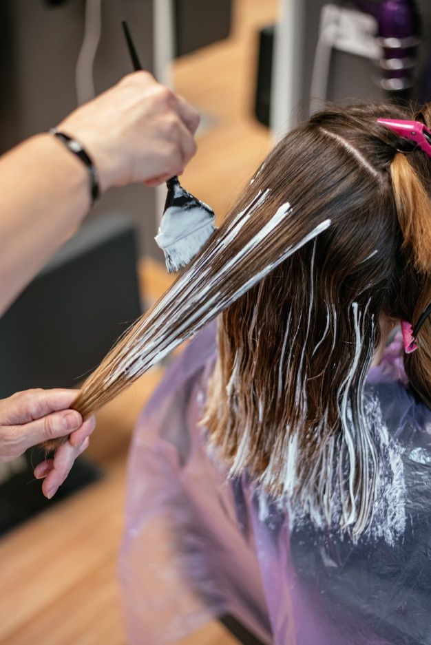
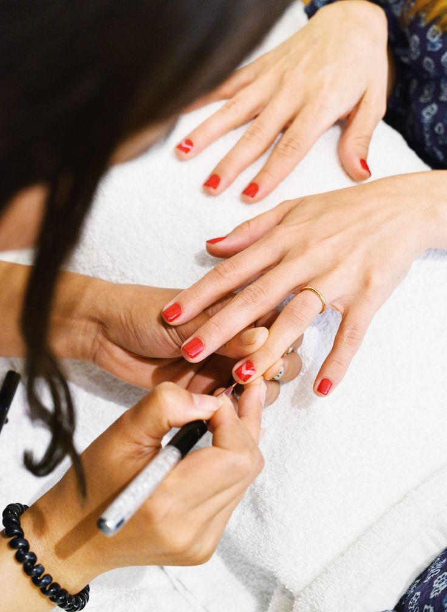

Welcome to MooBeauty Salon Now
|
|
||||
| The best product for coloring hair | Salons offer a wide array of hair colors | Providing the best service | |||
| The best product for coloring hair in a salon is typically a high-quality professional hair color brand. These products are known for their superior quality, vibrant color options, and long-lasting results. Salon professionals often use trusted brands like L'Oréal, Wella, Schwarzkopf, and Redken, among others, to achieve stunning and consistent hair color transformations. These products are specially formulated to deliver precise and even color coverage while minimizing damage to the hair. When clients visit a salon, they can trust that the professionals will use the best products available to ensure their hair receives the finest color treatment, leaving them with beautiful and vibrant results. | Salons offer a wide array of hair colors for clients to choose from when coloring their hair. These choices range from classic shades like blonde, brunette, and black to more daring and creative options like pastels, vibrant reds, and bold blues. Salon professionals use premium hair color products that not only deliver the desired shade but also provide nourishment and minimize damage to the hair. Whether it's for a subtle touch-up or a dramatic transformation, salon experts are skilled in helping clients select the perfect hair color to suit their style, skin tone, and personality, ensuring that every visit results in a stunning and personalized look. | Providing the best service in a salon is a top priority for professionals in the beauty industry. It begins with a warm and welcoming atmosphere that instantly puts clients at ease. Salon experts take the time to listen to their clients' desires and concerns, offering personalized consultations and recommendations. They use top-quality products and stay updated on the latest techniques to ensure the best possible results. Attention to detail, precision, and a commitment to customer satisfaction are the hallmarks of exceptional salon service. Whether it's a haircut, color treatment, or any beauty service, the goal is to leave clients feeling pampered, confident, and absolutely delighted with their salon experience. | |||
|  |  | ||||
| The best hair coloring service | The best facials | The best nail arts | |||
| The best hair coloring service in a salon is an artful blend of expertise, creativity, and attention to detail. Salon professionals are trained to assess each client's unique hair type, skin tone, and style preferences to recommend the perfect hair color solution. They use premium-quality hair dyes that ensure vibrant and long-lasting results while minimizing damage to the hair. The application process is meticulous, guaranteeing even and consistent color coverage. What sets the best hair coloring service apart is the ability to transform a client's look into a stunning, customized masterpiece that enhances their natural beauty. Clients can trust that in a top-notch salon, their hair coloring experience will be a true reflection of skill and passion. | The best facial in a salon is a luxurious and rejuvenating experience designed to enhance skin health and radiance. Salon professionals provide personalized facial treatments tailored to each client's unique skin type and concerns. Using high-quality skincare products and expert techniques, they cleanse, exfoliate, and nourish the skin, leaving it feeling refreshed and revitalized. Beyond the physical benefits, a top-notch facial in a salon offers a serene escape from everyday stresses, promoting relaxation and self-care. It's a holistic approach to skincare that not only enhances one's external beauty but also boosts inner confidence, making it an essential and cherished service for those seeking a revitalized and glowing complexion. | The best nail arts in a salon are a testament to creativity and precision. Salon professionals skilled in nail art combine artistic flair with meticulous attention to detail to craft stunning and unique designs. Whether it's intricate patterns, vibrant colors, or elegant embellishments, they use top-quality nail products to bring clients' nail fantasies to life. A great nail art experience goes beyond just aesthetics; it offers a confidence boost and a sense of self-expression. Clients can trust that in the hands of skilled nail artists at the best salons, their nails will become captivating works of art, showcasing both individual style and the highest level of craftsmanship. | |||
|
|||||
| The best hair styles | Treatment for the skin | Hair treatments | |||
| The best hair styles in a salon are a blend of artistry and expertise. Salon professionals are trained to create hairstyles that suit each client's unique face shape, personality, and lifestyle. They use their skills and precision tools to craft everything from classic cuts to trendy, avant-garde looks. The best hairstylists stay updated with the latest trends and techniques to ensure clients receive the most stylish and flattering hair transformations. A visit to such a salon is not just about a haircut or styling; it's an experience that leaves clients feeling confident, beautiful, and ready to conquer the world with their new, stunning hairdo. | Treatment for the face in a salon is a soothing and rejuvenating experience that prioritizes skin health and radiance. Salon professionals offer a range of facial treatments tailored to individual skin types and concerns. These treatments typically involve gentle cleansing, exfoliation, and the application of nourishing skincare products. The goal is to improve skin texture, tone, and hydration while promoting relaxation and self-care. Beyond the physical benefits, a salon facial offers a moment of serenity and pampering, leaving clients with a refreshed and revitalized complexion. It's a holistic approach to skincare that enhances both outer beauty and inner well-being, making it a cherished service for those seeking a radiant and glowing face. | Hair treatments in a salon are a rejuvenating experience dedicated to promoting hair health and beauty. Salon professionals provide a variety of specialized treatments to address individual hair needs, from deep conditioning to repairing damaged strands. These treatments often include the use of high-quality hair care products and expert techniques designed to nourish, strengthen, and enhance the hair's natural beauty. Beyond the physical benefits, a salon hair treatment offers a moment of relaxation and self-indulgence, leaving clients with softer, shinier, and more manageable locks. It's a comprehensive approach to hair care that not only enhances external appearance but also boosts confidence, making it an essential part of any salon's offerings. |